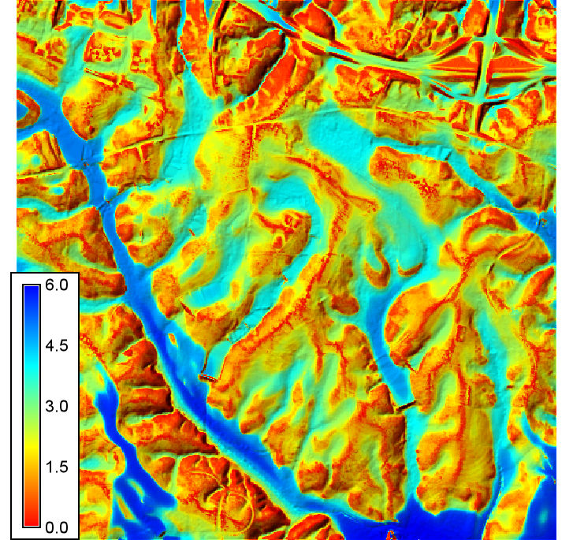

DESCRIPTION
r.valley.bottom calculates the Multi-resolution Valley Bottom Flatness (MRVBF) index (Gallant and Dowling, 2003). The MRVBF index assesses the flatness and lowness of terrain over multiple scales and DEM resolutions in order to identify valley bottoms, which represent areas that are flat across multiple scales, and remain low relative to the surrounding relief at coarser scales. The algorithm uses a sigmoid/logistic transform to rescale terrain slope angles and elevation percentile into a 0 to 1 range, and then combines these results across multiple levels of DEM smoothing and coarser grid resolutions. Although the resulting index represents a continuous value, values < 0.5 do not generally represent valley bottoms, values from 0.5 to 1.5 represent the steepest resolvable valley bottoms, and flatter/larger valley bottoms are represented by values > 1.5.
NOTES
The user must specify the input elevation raster map as a required input. The output is given by the mrvbf argument. Optionally, the complementary Multiresolution Index of Ridge Top Flatness can be calculated by specifying the mrrtf argument. In addition, there are several parameters than can be used to change the behaviour of the argument, although note that in this case the results and their interpretation will differ from what was envisaged in the original paper. However, in practice, this is often required especially for high-resolution DEMs. The arguments are:
- t_slope represents the initial threshold (t) for slope angle (in percentage). This specifies the slope angle that corresponds to a (logit) rescaled flatness value of 0.5. This means that slope angles lower than t_slope will be considered as flat areas, and slope angles higher than t_slope will be represented as non-flat areas. t_slope should be set based on the resolution of the input elevation dataset, and the algorithm was designed using with a 25 m DEM having a t_slope value of 16. Otherwise the t_slope value should by halved for every resolution step (a step consisting of a 3 x coarsening of resolution) above a 25 m resolution. For example, a 75 m DEM (3 x 25 m, 1 step) should have a t_slope value of 8, and a 250 m DEM (~2 resolution steps) should have a t_slope value of 4.
- p_slope represents the shape parameter (p) for the sigmoid transformation. It defines the slope of the sigmoid function, i.e. how quickly changes in slope angle scale to being flat vs. non-flat areas. High p_slope values will cause a slow, smooth transition from flat areas to steep areas. Low p_slope values will result in much more rapid transitions that highlight more local vs. regional relief.
- t_pctl_v represents the threshold for transformation of elevation percentile to evaluate lowness. This represents the threshold value for elevation percentile by which values less than this value will represent low areas. Elevation percentile represents the ratio of pixels of lower elevation relative to the total number of pixels in a moving-window neighborhood. Similarly t_pctl_r is the equivalent 'upness' threshold for the MRRTF index.
- p_pctl represents the shape parameter (p) for the transformation of the elevation percentile. It defines the slope of the sigmoid function and governs how quickly transitions occur from low areas to upland areas.
- t_vf and t_rf represent the thresholds for identifying valley bottoms (or ridge tops). Larger values indicate increasing valley bottom characteristics, with values < 0.5 considered not to be in valley bottoms.
The calculation of elevation percentile by default is performed using a circular window. With the -s flag a square moving window is used in calculations.
In practice, the user does not usually need to alter the threshold-related parameters other than t_slope. However, changing the shape parameters can be useful for to emphasize more local vs. more regional variations in relief. The degree of generalization can also be adjusted by the min_cells argument. The default value of 1 is equivalent to generalizing the input elevation raster to 100 percent of its original cell size. To reduce processing time, or focus the results on more local-relief, try increasing the number of min_cells.
EXAMPLE
Here we are going to use the GRASS GIS sample North Carolina data set as a basis to calculate the MRVBF index.
# align region to DEM
g.region -a raster=el_D782_6m
# run r.valley.bottom
r.valley.bottom elevation=el_D782_6m mrvbf=mrvbf_el_D782_6m t_slope=40 p_slope=3 p_pctl=2
# set colors
r.colors map=mrvbf_el_D782_6m color=bcyr -n
# display over a shaded relief map
r.relief input=el_D782_6m output=hs_D782_6m altitude=45 azimuth=315 zscale=4 scale=1
r.shade shade=hs_D782_6m color=mrvbf_el_D782_6m output=mrvbf_shade
d.rast map=mrvbf_shade

SEE ALSO
r.mapcalc,
r.slope.aspect
REFERENCES
J.C. Gallant & T.I. Dowling 2003.
A multiresolution index of valley bottom flatness for mapping depositional areas.
Water Resources Research, Vol. 39, No. 12, 1347. doi:10.1029/2002WR001426
AUTHORS
Helmut Kudrnovsky & Steven Pawley